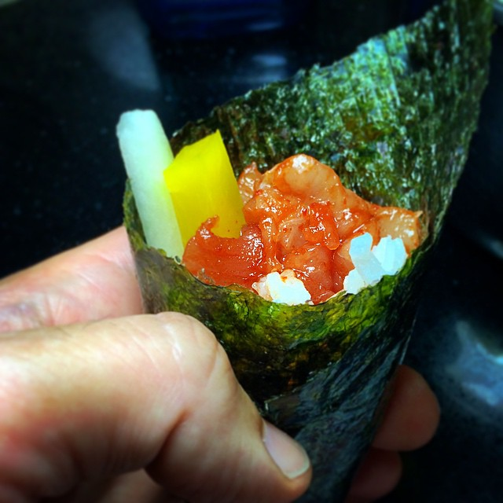

Curated Sets, Pristine Seafood.
Discover our focused hand-roll menu: curated multi-roll sets paced one at a time, premium à la carte temaki additions, knife-crafted crudos, and artisanal Japanese sakes.

Curated Hand-Roll Sets (Passed One By One)
Carefully sequenced progressions designed to showcase evolving textures, oil richness, and flavor intensity.
Spicy Yellowfin Tuna, Wild King Salmon with yuzu kosho, and Yellowtail Scallion (Hamachi) with warm shari rice and crisp Ariake nori.
Bluefin Toro Scallion, Wild King Salmon, Spicy Hokkaido Scallop with masago aioli, and Blue Crab with ripe avocado.
Bluefin Toro, Warm Butter Maine Lobster, Yellowtail Scallion, Spicy King Salmon, and Sweet Glazed Unagi (Eel) with toasted sesame.
Bluefin Toro crowned with Royal Osetra Caviar, King Crab, Maine Lobster, Wild King Salmon, Spicy Scallop, and Sweet Unagi Eel.
À La Carte Hand Rolls
Order individually or add to your set at any point during your counter seating.
Rich fatty bluefin tuna belly hand-chopped with fresh scallions, crowned with imported Royal Osetra sturgeon caviar.
Sweet Maine lobster knuckle and claw meat poached in clarified yuzu butter with sea salt inside a crisp nori wrap.
Sweet Japanese sea scallop diced with spicy sesame kewpie aioli, capelin roe, and thinly shaved scallions.
Pristine king salmon filet lightly brushed with nikiri soy and seasoned with citrusy green yuzu kosho chili paste.
Crudo, Small Plates & Junmai Sake
Artisan sashimi starters, edamame, and premium chilled Japanese rice wines.
Six delicate slices of Japanese yellowtail sashimi with shaved fresh jalapeño, micro cilantro, ponzu, and white truffle oil.
Steamed young green soybeans in the pod tossed with coarse Maldon sea salt crystals and fragrant black truffle oil.
Thinly shaved crisp English cucumbers dressed with sweet rice vinegar, toasted white sesame seeds, and pickled ginger.
Chilled glass or carafe of Yamaguchi's iconic Junmai Daiginjo. Polished to 45%, offering notes of ripe melon and clean minerality.